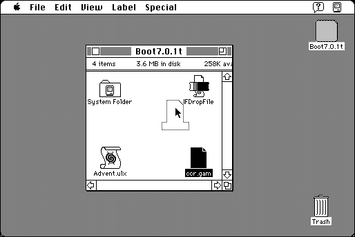

Download
IFDropFile-310.zip (16K) IFDropFile 3.1.0 repackaged into a zipped hfs disk image and checksum file. The disk image can be mounted with Mini vMac.
IFDropFile-310.hqx (20K) IFDropFile 3.1.0 in the original format.
copyright: Andrew Plotkin
mod date: Sep 27, 2000
license: Freeware
official url :
IFDropFile
Utility to automatically set the file type of various kinds of IF (interactive fiction) files so they can be more easily used. Requires System 7. The About/Preferences dialog is too big for the standard Macintosh Plus screen. (Mini vMac can emulate a Macintosh Plus with a larger screen.)

If you find these downloads useful, please consider helping the Gryphel Project, which hosts them.
Here are the md5 checksums for the downloads, signed with Gryphel Key 5:
--------- GRY SIGNED TEXT --------- 366899371faae6b589a1a19fb1940f0e IFDropFile-310.zip 682bc5a6560ef1f2a153a51c407648cf IFDropFile-310.hqx ------- BEGIN GRY SIGNATURE ------- Gry/4Xa8CFcUzxdN/KBQUnToj95KQYB8xd4caxRodpWpHKbAqEQuXgqrshQhX3T/ 3RavpWWAm0pSF6mbKKg6D2paFADMyhDk6uGn4QzDiItwBKqMYq7b8+L9jDp2oSFV L8ROzWYd3qJQKVxf5PjUZ2c0043M70ei/3RWlCoHtlK0l9Dfmn76LKUlPkoTJx9w -------- END GRY SIGNATURE --------